World-Time Computing
A Next Frontier for Simulated Learning — turning compute into unlimited, exactly-labeled experience
Jim Schwoebel — Quome / OpenWorld
github.com/quome-cloud/openworld
The roadmap
The talk in one map
1Motivation
2The mechanism
3Scaling & real data
4Boundaries
5Reflection
1Motivation
2The mechanism
3Scaling & real data
4Boundaries
5Reflection
Part 1
Motivation
Manufacturing experience
Motivation
The problem: experience is scarce
- LLMs generalize only after many real, labeled examples
- In most domains that experience is scarce and costly
- We study a way to manufacture it cheaply
- Idea: when dynamics can be written as code, simulate the experience
Motivation
Two species of world model
- Perceptual/generative: learned nets, latents/pixels/video (Dreamer, Genie, Sora)
- Data-hungry, compounding error, opaque weights
- Code World Models (CWMs): transition is a readable program over symbolic state
- Synthesized by an LLM, verified before use, exact rollouts, zero training data
Where spatial-intelligence systems learn what cannot be told, OpenWorld writes down what can be told -- and verifies it.
Motivation
Two conditions make it work
- Worlds must not lie: dynamics are verified code, not learned approximations
- Accepted only if it parses, runs sandboxed, preserves invariants, survives a critic
- Need many worlds -- each must be cheap to build
- OpenWorld makes authoring a verified world a minutes-scale activity
Motivation
Contributions
- World-time compute on real domains, with cross-world transfer
- Why it must be verified code: exact rollouts, no compounding error
- OpenWorld substrate + full reproducibility (79 experiments, seed-fixed)
Problem Setting
Motivation
Symbolic-state worlds
- State is JSON-serializable; actions discrete; dynamics declarable as rules
- Covers triage, negotiation, portfolios, sprints, program repair
- Not pixel-native domains -- that is the scope boundary
- The adversary is model error: hallucinated transitions, silently wrong code
Motivation
A world model, formally
- W = (states, actions, s0, transition tau, weighted objectives, invariants)
- Practitioner declares everything but tau (schema, actions, rules, dials)
- Framework produces tau by synthesis under verification, not learning
- Certifies invariant-consistency, not equality to true dynamics
Motivation
Verified code is exact at every depth
Method & Experimental Setup
Motivation
Worlds and models
- Three oracle worlds: sprint, orchard, triage (hand-written ground truth)
- Coding world: 20 buggy-function repair tasks, transition = test execution
- Local Ollama models: qwen2.5 1.5B/3B/7B, plus Llama-3.1-8B, Gemma2-9B
- Fine-tuning runs: single cloud A100, 4-bit QLoRA
Motivation
Baselines and metrics
- LLMTransition: same backbone predicting each next state (learned-style proxy)
- Trained MLP + 1-NN on K = 100 / 1k / 10k random transitions
- Exact-state match, first-divergence step, final L1 error; pass@k for repair
- 95% Wilson CIs; every number regenerates from one script
1Motivation
2The mechanism
3Scaling & real data
4Boundaries
5Reflection
Part 2
The mechanism
Verified code + world-time compute
The mechanism
World-time compute, in three numbers
24/24
exact rollouts (code)
0/24
exact rollouts (LLM)
+29 pts
held-out lift at 0.5B
The mechanism
Verified code eliminates compounding error

A: code exact at every depth vs LLM diverging by step ~2.3. B: world-time compute payoff.
- Code (blue) matches oracle exactly across a 20-step rollout
- Per-step LLM (orange) first diverges ~step 2.3, never completes exactly
- B: fine-tuning on 60 verified worlds lifts held-out accuracy
- Largest gain for smallest models: +29 pts at 0.5B, +3 at 32B
The mechanism
Head-to-head dynamics fidelity (E1/E4/E11)
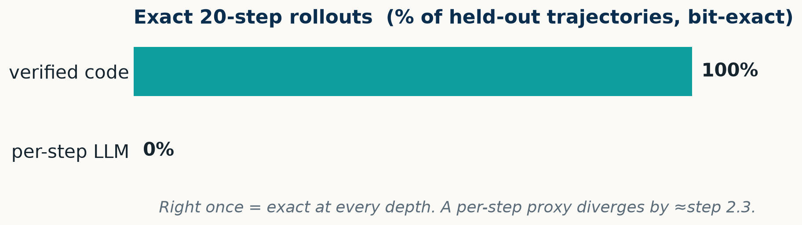
Right once = exact at every depth; the per-step proxy never completes exactly
- Code rolls out at ~15,000 steps/s vs the LLM's 0.32 steps/s
- OOD probes: code 100% exact from zero transitions
The robust claim is the exact-match contrast, not the mean divergence step -- compounding depends on per-world error rate.
World-Time Compute: Traversing Worlds to Generalize
The mechanism
What world-time compute is
many verified worlds
one distilled skill
a new, held-out world
The mechanism
Anatomy of one diagnosis world (E74)
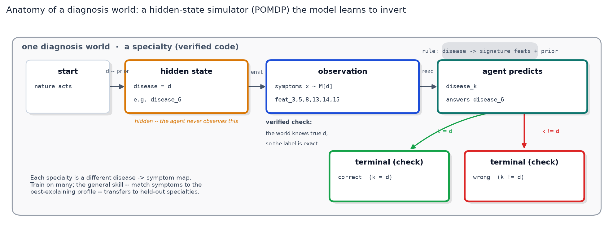
Hidden disease -> emitted symptoms; agent inverts observation to name the disease.
- Each specialty is a small hidden-state simulator with a known label
- Agent treats its own verified world as ground truth
- Train on many specialties, test on held-out ones
- Forces the general skill, not memorization
The mechanism
Generalization, not memorization -- and a small-model multiplier
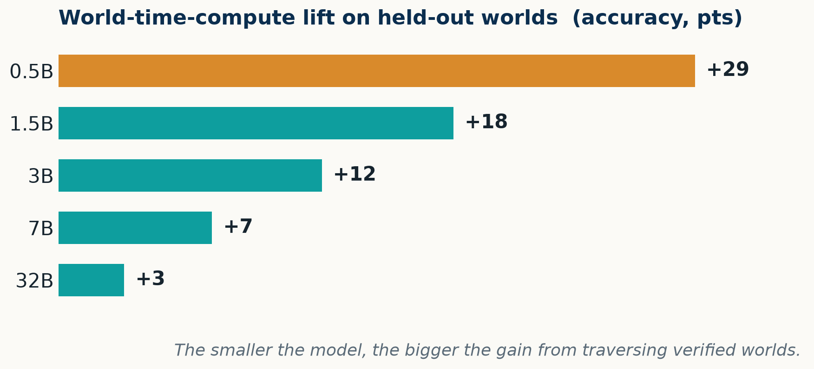
Lift at every model size on unseen worlds; the smaller the model, the bigger the gain
- 0.5B: 37% -> 66%; 32B: 78% -> 81% toward the 86% rules-given oracle
- Heterogeneous worlds sharing no skill (E71/E73) give no transfer
1Motivation
2The mechanism
3Scaling & real data
4Boundaries
5Reflection
Part 3
Scaling & real data
World-count, exact labels, real domains
Scaling & real data
World-count scaling (E76)
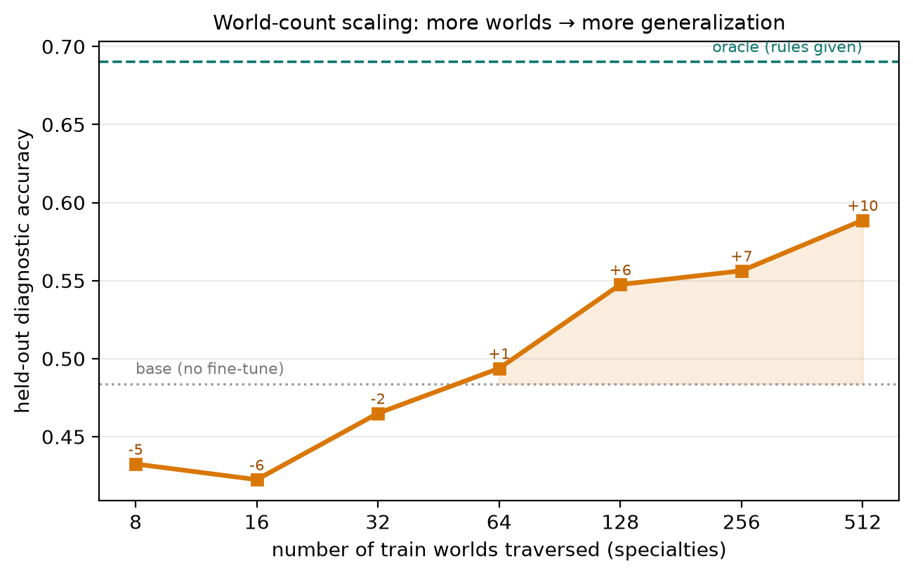
Held-out accuracy vs number of train worlds; still climbing at 512 worlds.
- Too few worlds hurt (below 48% base) -- overfits a narrow slice
- Gain then rises monotonically, no plateau
- Still climbing at 512 worlds: 59% (+10 pts), heading toward 69% oracle
- A genuine scaling lever in the number of worlds
Scaling & real data
Exact labels are the lever (E78b)
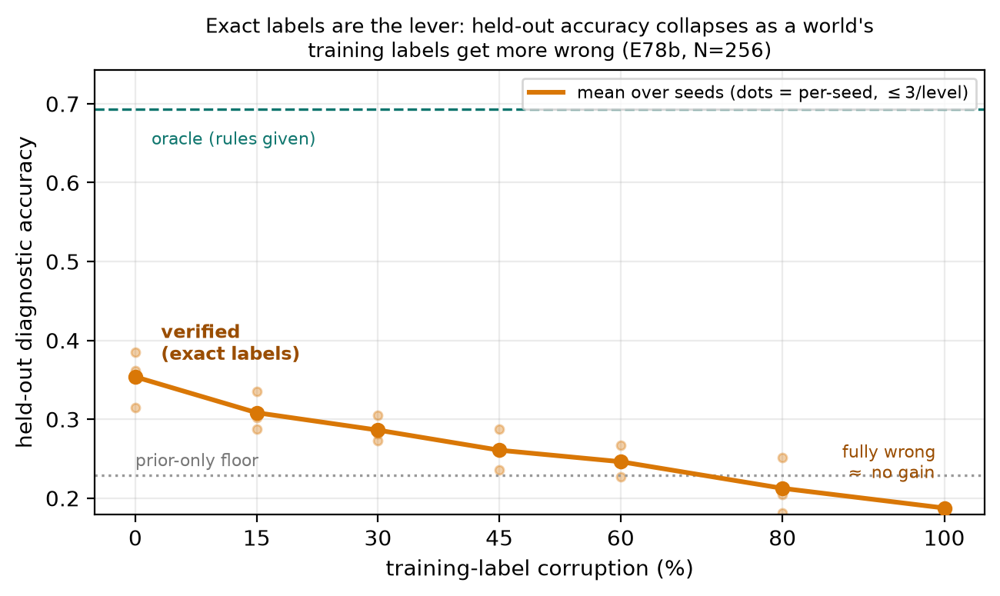
Corrupt a fraction p of training labels; accuracy falls monotonically.
- 256 worlds fixed; only training labels corrupted at rate p
- Verified (p=0): 35%; fully wrong (p=1): 19%, at/below floor
- Label exactness -- not task variety -- drives the effect
- This is what separates world-time compute from domain randomization
Scaling & real data
A coding-world family (E77)
- 164 function-implementation worlds, each verified by its pytest oracle
- In-domain: 7B pass@5 lifts 84% -> 95% at every size
- HumanEval (OOD): hurts greedy pass@1 (78% -> 70%)
- But transfers positively at pass@5 (87% -> 91%) from only 164 worlds
Real Data: World-Time Compute on ARC-AGI
Scaling & real data
How WTC fine-tunes on a verified world (E80)
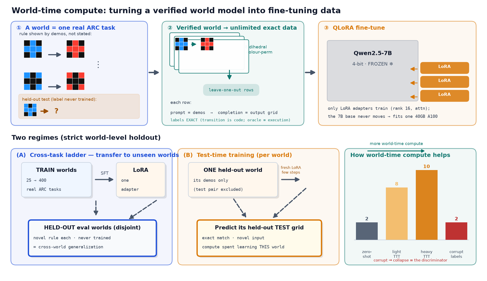
ARC task -> augmented exactly-labeled rows -> QLoRA on frozen 4-bit Qwen2.5-7B.
- Each ARC task is a world with a latent rule shown by demonstrations
- Rule-preserving augmentation (dihedral x color) -> unlimited labeled rows
- Two strict holdouts: cross-task ladder and per-world test-time training
- Corrupted-label arm is the discriminator
Scaling & real data
World-time compute on real ARC-AGI (E80)
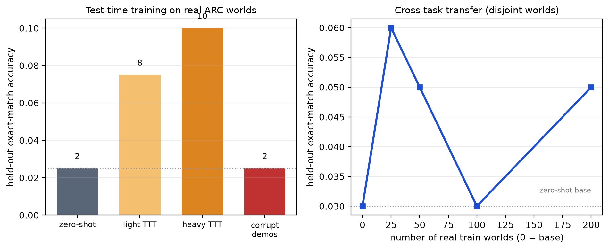
Per-world TTT lifts exact-match; cross-task transfer stays weak.
- Zero-shot 2% -> light 8% -> heavy 10% (+8 pts) with more compute
- Corrupted demos fall to 2%, at the zero-shot floor
- Lift requires verified labels -- the model learns each real rule
- Cross-task transfer weak (3% -> 5%): every ARC rule is novel
Scaling & real data
Across real domains and modalities (E80)

Scales and collapses on symbolic domains; Bongard vision stays at chance.
- List Functions: 35% -> 66% -> 69% (heavy); corrupt 3%
- CLRS algorithms: 9% -> 13% -> 17%; corrupt 4%
- Effect largest for shallow rules, smallest for long algorithm traces
- Bongard-RWR (vision): flat at chance (46/48/52%) -- the perceptual boundary
Cross-World Transfer on a Real Domain
Scaling & real data
Cross-world transfer, List Functions (E84)
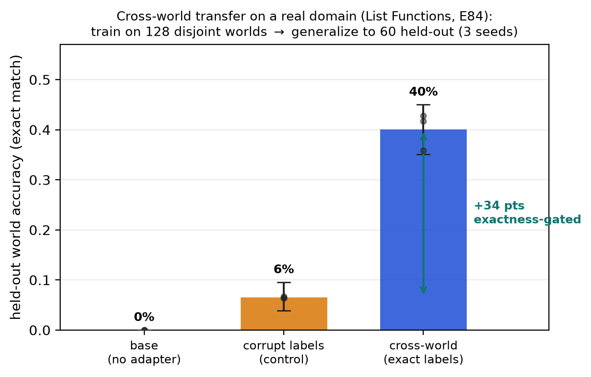
One adapter on 128 disjoint worlds generalizes to 60 held-out worlds.
- Cross-world 40% (CI [35,45]) on worlds never seen
- Corrupted-label control only 6% -- a +34-pt exactness-gated lift
- Gap is rule-induction transferring across worlds, not formatting
- The novel axis, demonstrated on data we did not generate
Scaling & real data
Cross-world transfer scales with #worlds (E84)

Held-out accuracy 29% -> 49% rising then plateauing near 64 worlds.
- Rises from 29% at 16 worlds to a 49% peak by 64 worlds
- Corrupted-label control stays flat
- A rising-then-plateauing scaling curve on real data
- More verified worlds -> more transfer
Scaling & real data
A descriptive regularity (E80)
- Saturating learning curve: acc(c) = base + (C-base)(1 - e^{-c/kappa})
- Asymptote tracks identifiability x realizability x headroom
- Light-dose probe predicts heavy asymptote (Spearman 0.73-0.98)
- Holds for a non-neural program synthesizer too (learner-invariance)
- N90 worlds: List Functions 3, ARC 9, CLRS 15 -- harder needs more
1Motivation
2The mechanism
3Scaling & real data
4Boundaries
5Reflection
Part 4
Boundaries
Where it stops working, and why
Boundaries
Frame-invariance is a negative (E81)
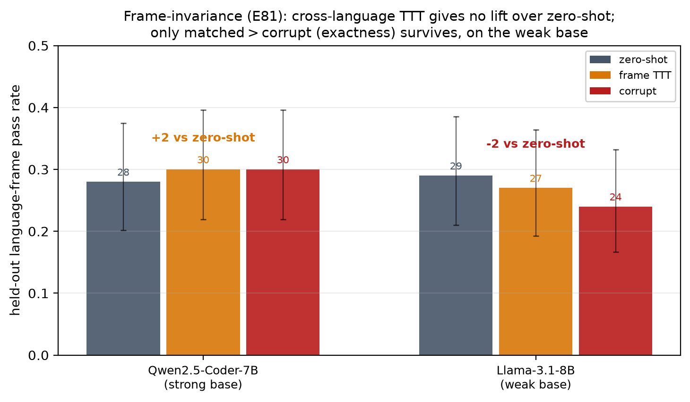
Cross-language-frame TTT does not beat zero-shot on either base.
- One problem in 5 languages; train on other frames, test held-out language
- Strong coder flat (28% -> 30%); weak base drops (29% -> 27%)
- Only weak exactness ordering survives (matched > corrupt)
- A held-out language behaves as its own skill -- an honest boundary
Boundaries
The hybrid loop (E82)
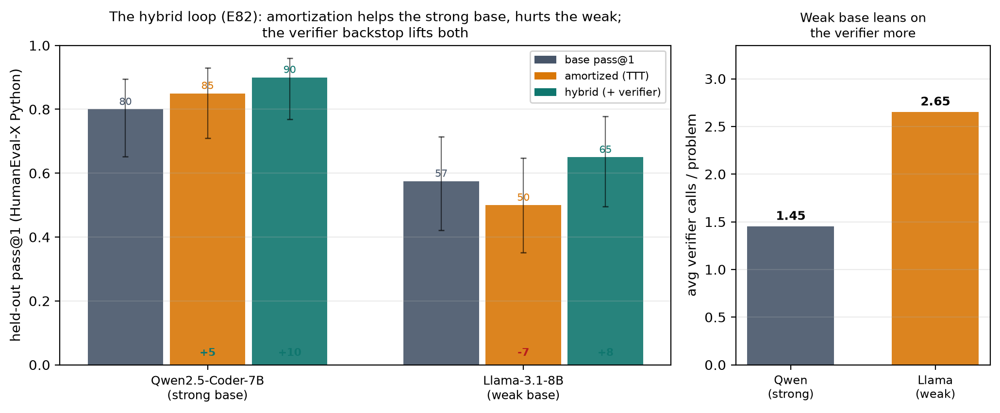
Verified world as generator + verify-and-retry backstop on HumanEval-X.
- Amortization helps strong base (80% -> 85%) but hurts weak one (57% -> 50%)
- Hybrid loop lifts both above base: Qwen 90% (+10), Llama 65% (+8)
- Weak base leans on the verifier more (2.65 vs 1.45 calls/problem)
- Exactness used as an oracle is sufficient -- the robust default route
Against Trained & Perceptual Dynamics
Boundaries
Trained baselines vs zero-transition program (E12)
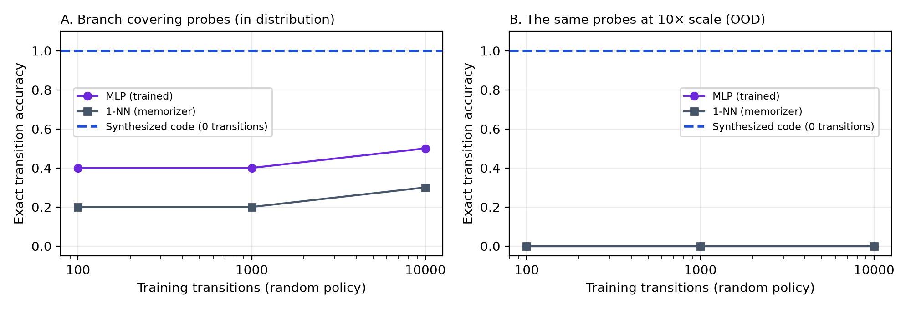
MLP/1-NN trained on K transitions; none transfers out of distribution.
- At K=10,000 the MLP reaches only 50% in-dist, 0% at 10x OOD
- Synthesized program: 100% on both from zero transitions
- 1-NN memorizes rollouts (8/8) yet scores 30% on branch probes
- OOD + branch-covering probes, not rollout agreement, measure quality
Boundaries
Induction does not scale with capability (E38)
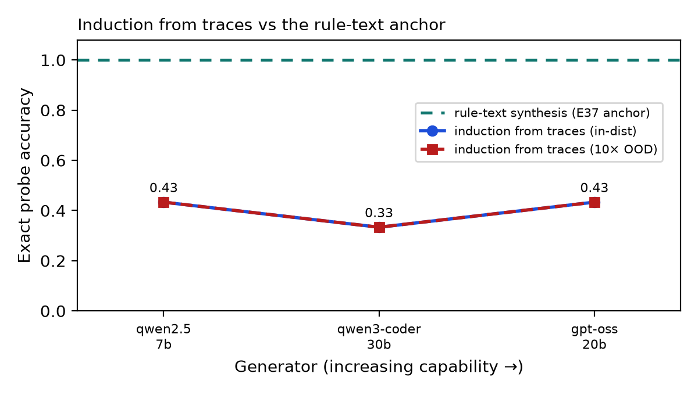
Trace-induction probe accuracy flat across three generator families.
- From traces alone (no rule text): 0.43 (7B), 0.33 (30B coder), 0.43 (gpt-oss)
- None approaches the rule-text anchor of 1.00
- Every model exactly scale-invariant (in-dist = 10x OOD)
- An identifiability limit of the data, not a capability limit
Boundaries
Acting closes the gap scale cannot (E43)
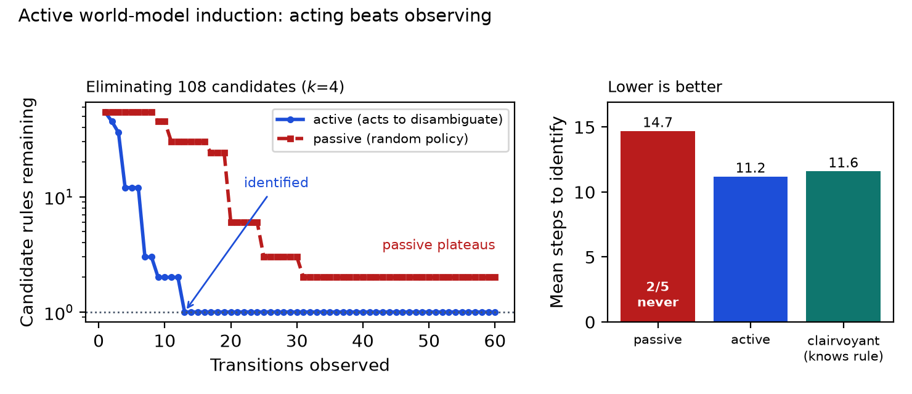
Active version-space elimination beats passive observation.
- Active policy identifies the exact rule in 11.2 transitions vs 14.7 passive
- Passive never resolves 2/5 high-k rules within budget
- Active (knowing nothing) matches clairvoyant reference (11.2 vs 11.6)
- When traces underdetermine dynamics, choose the transitions
Boundaries
The complexity cliff (E20)
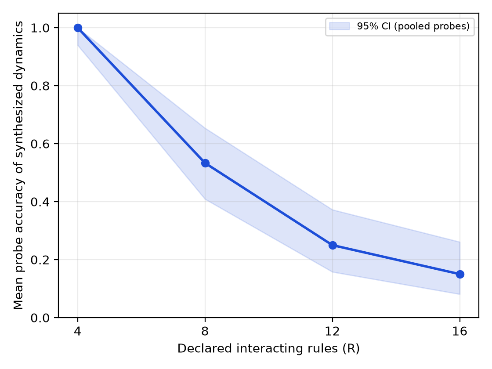
Synthesis accuracy vs number of declared interacting rules.
- R=4: 1.00; R=8: 0.53; R=12: 0.25; R=16: 0.15
- Monolithic 7B synthesis unreliable past ~8 coupled rules
- The paradigm's present boundary at this model scale
- Motivates compositional synthesis -- one expert per rule
From Fidelity to Decisions
Boundaries
Planning through a verified world (E22)
- Model-predictive depth-3 lookahead, best action executed in ground truth
- Planning through verified program scores 7.5 -- identical to the oracle
- Reactive heuristic 5.0; random 3.8; whole episode planned in 0.03 s
- Planning through the LLM engine scores 0.0 -- worse than no model
Boundaries
Crossing species: bake-off (E63/E65/E67)
- 6 runnable models x 2 symbolic domains: verified code exact and optimal
- Every learned model collapses to 0% exact at 10x OOD
- MiniGrid DoorKey: OpenWorld solves zero-shot in an 11-step plan
- DreamerV3 needs ~9,640 interactions to first solve; V-JEPA-2 cannot control
1Motivation
2The mechanism
3Scaling & real data
4Boundaries
5Reflection
Part 5
Reflection
Discussion, limitations, conclusion
Reflection
Is world-time compute just fine-tuning?
- Mechanically yes -- LoRA-SFT; the claim is about the data source
- A correct world model turns compute into unlimited correct training data
- Two things earn the name: verified-label dependence and cross-world transfer
- Where neither holds, it is fairly just expensive fine-tuning -- and we say so
Reflection
The trajectory unit, measured (E85)
- Training unit is a transition (s,a,s'), not a final answer
- At the trained horizon: trajectory 70% vs answer 58% (+12 pts)
- Rolled out longer than trained, answer unit catches up (75% vs 68%)
- Composing per-step predictions reintroduces compounding on the learned side
Reflection
When does it pay off? Few-step reasoning
- Wins where a task is few steps over state that can be told symbolically
- Shallow rule induction, small grid transforms, short-horizon planning
- Degrades as reasoning lengthens (CLRS traces, >8 composed rules)
- Cedes long-horizon, perception-heavy regimes to learned models
Reflection
Three routes to use a verified world model
Tool
Serve, plan, verify — no training
Per-world TTT
Distill one world's trajectories
World-time compute
Traverse a family; generalize
Hybrid
Exact data + verify backstop
Reflection
Limitations
Scope
Symbolic, not pixel-native
Complexity
Cliff past ~8 rules
Variance
Some numbers single-seed
Stats
No family-wise correction
Conclusion
Make the model a program, verify the program, and keep the values dialable -- an orthogonal path to scaling parameters until hallucination is suppressed.
Reflection
Takeaways
- Verified code world models are bit-exact where learned dynamics compound error
- Plan as well as ground truth; hallucinated planning is worse than none
- Traversing many verified worlds lifts generalization to held-out worlds
- Next: compositional synthesis, benchmark-scale coding, perception-to-symbol pipelines